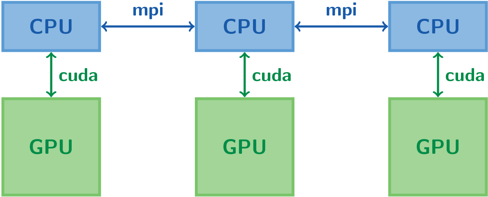

ExaWind: Revealing the dynamics of wind turbines with high fidelity simulations
Gallery of Fluid Motion, APS-DFD, 2025
Simulation of a wind farm using ExaWind
Best Visualization Award Supercomputing 2023
Lighting a Match in a Fire Extinguisher: Oxycombustion in a Supercritical Carbon Dioxide Turbine
Gallery of Fluid Motion, APS-DFD, 2023
Simulation of an RCCI Engine using the Pele Suite of Exascale Codes
2022 APS/DFD Milton van Dyke Award Winner
Direct fuel injection effects in a supersonic cavity flameholder
2020 APS/DFD Gallery of Fluid Motion Award Winner
Multi-GPU parallel implementation through CUDA and MPI

Shock (Mach 2.5) impacts a drop of water in air
Strong shock (19GPa) impacting an air bubble in water
Simulated Schlieren of density. Problem first defined by Ball et al.
Water drop at Mach 1.5 impacting on a wall
Blast-driven high-energy-density shear flow
High-energy density blast wave initiated on the left drives a shear flow between
light material (foam, top) and a denser material (plastic, bottom). This simulation
models the experiment presented in Di Stefano et al.
A Mach 1.21 shock moving downwards interacts with an air-SF6 interface. This
simulation models the experiment presented in Collins et al.
Growth of the perturbed interface as a function of time. Black squares: experiment;
solid red: simulation
Richtmyer-Meshkov instability with multiple layers
A Mach 1.21 shock moving downwards interacts with multiple layers of gases
(air-SF6-heavy gas-air). More details can be found in Henry de Frahan et al.
Blast wave interacting with perturbed air-SF6 interface